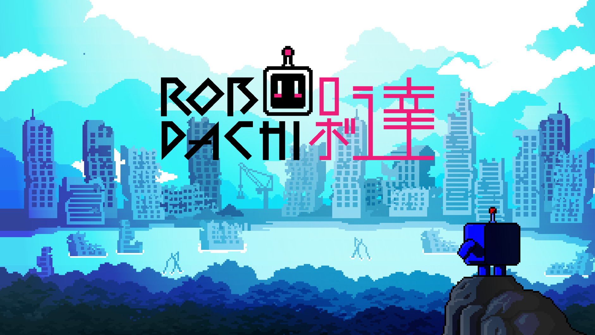

Mobile Product Concept · Game UX · Visual System
ROBODACHI / Planet of Robots
A step-driven mobile RPG concept that evolved from an early ROBODACHI prototype into a broader world where real-world walking drives exploration, resource collection, character growth, and long-term progression.

ROBODACHI began as a step-driven mobile game concept centered around a companion robot. As the product direction matured, it evolved into Planet of Robots, a broader 2.5D world with richer progression systems, stronger worldbuilding, and a more expandable character IP ecosystem.

Design Challenge
Turning walking into long-term engagement.
Many walking reward products end at "Walk → Reward → End," which can make the experience feel transactional. Many GameFi products focus on earning, but lack emotional attachment, long-term progression, or approachable gameplay for casual users.
The challenge was to design a mobile experience that could support both traditional game users and blockchain-motivated users without making the core experience feel complicated.
How might we turn walking into a long-term engaging experience instead of a one-time reward mechanic?
- Real-world movement should contribute to exploration, resources, and upgrades.
- Casual users should not need to understand blockchain or token systems to enjoy the game.
- The system should provide reasons to return through upgrades, discovery, bonding, gear, and world expansion.
- Early NFT holders needed a lightweight interactive experience before the full game was ready.
- The character system needed to scale as an IP.

User Motivation
Designing for casual players and advanced economy users.
Different users entered the product with different motivations. Casual users needed play, bonding, upgrades, and discovery. More advanced users could access NFT, marketplace, and ownership systems.
The UX strategy was to keep the casual game loop simple while allowing deeper economy systems to exist outside the core experience.
Casual play first. Advanced economy second.

Product Solution
Walking becomes fuel for RPG progression.
I designed a step-driven RPG progression loop where real-world movement becomes the input for in-game exploration, resource collection, equipment discovery, and character growth.
Walk → Explore → Collect Resources → Upgrade ROBODACHI → Unlock New Actions → Walk Again
Instead of ending at a simple reward, walking feeds a larger progression system that gives users reasons to return.
Prototype Evolution
From a focused ROBODACHI prototype to the broader Planet of Robots experience.
The earliest prototype phase was built when the project was still framed primarily as ROBODACHI. At that stage, the focus was the core move loop, lightweight progression, early mobile interactions, and proving the product fantasy around a robot companion driven by real-world movement.
As the concept matured, it evolved into Planet of Robots, a broader 2.5D world with richer environments, stronger progression logic, and more scalable storytelling.


First Prototype - Core Move Loop
This early prototype focused on validating the core movement loop, basic screen flow, and the emotional foundation of interacting with a ROBODACHI companion.


PoR Prototype - Broader World Direction
The later PoR prototype expanded the experience into a richer world structure, connecting mobile flows with world exploration, visual identity, and broader gameplay ambition.


System Architecture
Mapping movement, gameplay, and economy layers.
After defining the core progression loop, I mapped the product system architecture to understand how exploration, resource collection, refinement, character upgrades, land expansion, and ownership mechanics connect across the experience.
- Movement Layer - real-world walking and distance tracking
- Game Layer - ROBODACHI growth, exploration, town building, materials, bonding
- Economy Layer - marketplace, token flow, NFT assets, item exchange
Move → Gather → Process → Build → Upgrade → Repair → Trade → Expand


UX Flow
Translating system logic into repeatable daily-use mobile flows.
I designed the core activity flow to define how players move from opening the game to completing tasks and collecting rewards. This clarified the happy path, edge cases, cooldown behavior, incomplete task states, and repeatable daily-use loops.
- Map-based exploration entry
- ROBODACHI selection before activity
- Exploration progress and reward collection
- Daily task checklist
- Gear, repair, storage, and level-up flow
- Bonding and soft interaction moments
Together, the screens show how the system logic was translated into a mobile experience that balances progression, clarity, and character attachment.
In-App Game Economy
- resources
- items
- upgrades
- bonding
- gameplay rewards
External Web3 Economy
- NFT assets
- marketplace
- token-related actions
- external ownership
Platform Constraint
Separating the casual game from the Web3 economy.
Because mobile app stores restrict blockchain-based transactions, I separated the experience into two layers: an in-app game economy for casual users and an external Web3 economy for advanced users.
The goal was to keep the blockchain layer functional without forcing casual users to understand wallets, tokens, or marketplace mechanics.


Character System
A scalable character IP system connected to gameplay roles.
ROBODACHI was designed as a modular character system with multiple body types, traits, accessories, and gameplay roles. Each unit type had a different personality, movement logic, and potential gameplay function.
- Cube Unit - intelligence, processing, strategy
- Runner Unit - speed, scouting, exploration
- Lifter Unit - strength, protection, construction
- Humanoid Unit - flexibility, balanced actions
- Flying Unit - aerial scouting, high mobility, high energy cost
Gear was designed as both a visual customization layer and a gameplay modifier. Different items could affect exploration, resource gathering, battle, repair, or town maintenance.


World Direction
Evolving the concept into a richer 2.5D world.
As the project evolved into Planet of Robots, I explored how the product could expand beyond a simple companion loop into a broader 2.5D world. This included world concepts, biome variations, environmental storytelling, and a more scalable visual direction.
I also created the ROBODACHI 3D model and shared it with an external animation team, who used it as the basis for a concept video that communicated the product world, use cases, and brand vision.
Early Engagement
Creating lighter interaction before the full game.
Because the full mobile game required a longer development cycle, the NFT release needed an earlier interactive experience that could provide immediate value to holders.
Bonding Prototype - Care and Item Interaction
I designed bonding interactions where players could engage with their ROBODACHI through lighter touchpoints such as care, feeding, and item-based interaction. This helped build emotional connection outside the exploration loop.
Lightweight HTML Game - Interim Playable Experience
I designed a lightweight HTML game as an interim playable experience. It was not intended to represent the final gameplay of Planet of Robots. Instead, it gave early holders and community members a way to interact with the ROBODACHI IP before the full product was ready.
Product Website Concept - Communicating the World
I also explored product website layouts to explain the ROBODACHI world, character roster, and early participation flow. These website concepts supported the same pre-production goal: making the product vision easier to understand before the full mobile experience existed.


{kind=link}
{kind=link}
{kind=link}
{kind=link}
{kind=link}
{kind=link}
{kind=link}
{kind=link}
{kind=link}
{kind=link}
{kind=link}
IP Ecosystem
Extending ROBODACHI beyond the mobile game.
To extend ROBODACHI beyond the mobile game, I planned it as a scalable character IP ecosystem, including community collaborations, physical mystery box toys, streetwear, online events, and interactive comics.
I also explored a physical mystery box toy concept using a magnetic attachment system, allowing randomized parts such as accessories, arms, body shells, and legs to be swapped and recombined. This connected the in-game customization system with a collectible physical product strategy.
{kind=link}

Outcome
A complete pre-production product vision connecting UX, gameplay, and IP strategy.
This project demonstrates my ability to define a product concept from zero, translate abstract user motivations into a gameplay system, design scalable UX flows for long-term engagement, and connect visual IP design with product strategy.
- 0-to-1 product framing
- UX system architecture
- Mobile interaction flow design
- Prototype evolution and iteration
- Game loop and progression logic
- Character IP and visual system design
- Early engagement strategy before full product development
This was an internal concept / pre-production case, not a fully launched mobile product.